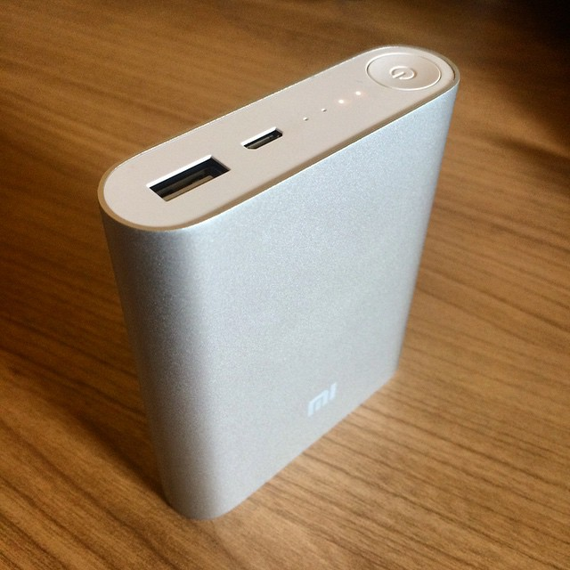
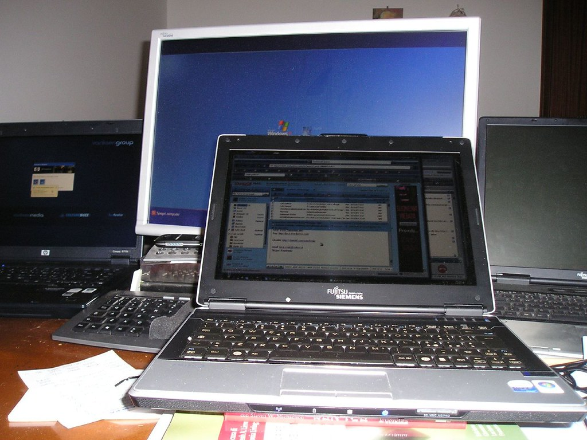
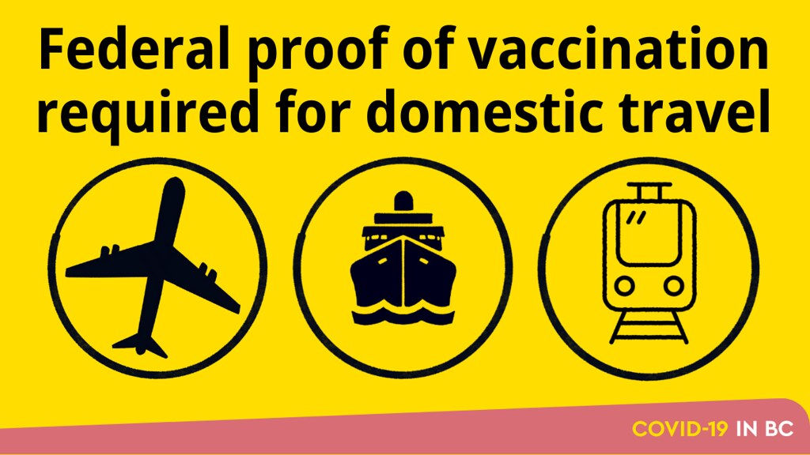

【2026年】大学生への入学祝いプレゼント5選｜友達別おすすめ
結論：迷ったらこれ
名入れタンブラー(サーモス・スタンレー)
大学入学は人生の大きな節目の一つです。友達や家族への入学祝いプレゼントを選ぶ際は、相手の気持ちに寄り添うものを選ぶことが大切です。
この記事では、大学生への入学祝いプレゼントを5選して紹介します。実用的で喜ばれるアイテムを探している方必見です。
選び方のポイント
大学生への入学祝いプレゼントを選ぶ際は、相手の兴味やニーズに合ったものを選ぶことが大切です。例えば、相手がコーヒーが好きな場合は、コーヒー関連のアイテムを選ぶと喜ばれるでしょう。
また、実用的で使えるものを選ぶことも重要です。大学生活で活用できるアイテムは、相手にとって大きな贈り物となるでしょう。

1. 名入れタンブラー(サーモス・スタンレー)
¥3,000〜¥8,000
名入れタンブラーは、大学生への入学祝いプレゼントにぴったりです。実用的で使えるものであり、相手の名前を入れることができるので、より喜ばれるでしょう。

2. ポータブル電源(アンカー)
¥5,000〜¥10,000
ポータブル電源は、大学生活で活用できるアイテムです。相手がスマートフォンやタブレットをよく使う場合は、喜ばれやすいギフトです。

3. ノートパソコン(レノボ)
¥50,000〜¥100,000
ノートパソコンは、大学生への入学祝いプレゼントにぴったりです。大学生活で活用できるアイテムであり、相手の学業や研究に役立つでしょう。
4. ヘッドフォン(ソニー)
¥5,000〜¥20,000
ヘッドフォンは、大学生への入学祝いプレゼントにぴったりです。相手が音楽や動画をよく見る場合は、喜ばれやすいギフトです。

5. 旅行券(JAL)
¥10,000〜¥50,000
旅行券は、大学生への入学祝いプレゼントにぴったりです。相手が旅行が好きな場合は、喜ばれやすいギフトです。
おすすめプレゼント
以下の5つのプレゼントは、大学生への入学祝いプレゼントにぴったりです。実用的で喜ばれるアイテムを探している方必見です。
各アイテムについて詳しく紹介しますので、ぜひ参考にしてください。
プレゼントの選び方のコツ
大学生への入学祝いプレゼントを選ぶ際は、相手の個性や兴味を考慮することが大切です。相手の好きな色やデザインを選ぶと、より喜ばれるでしょう。
また、プレゼントの価格も重要です。予算に合わせて選ぶことが大切です。
「結局どれにしよう」と迷ったら。
相手・予算・シーンを選ぶだけで、ギフトに向く定番を選びやすく絞り込みます。
まとめ
大学生への入学祝いプレゼントを選ぶ際は、相手の兴味やニーズに合ったものを選ぶことが大切です。実用的で使えるものを選ぶと、相手にとって大きな贈り物となるでしょう。
この記事で紹介した5つのプレゼントは、大学生への入学祝いプレゼントにぴったりです。ぜひ参考にして、相手の気持ちに寄り添うプレゼントを選んでください。